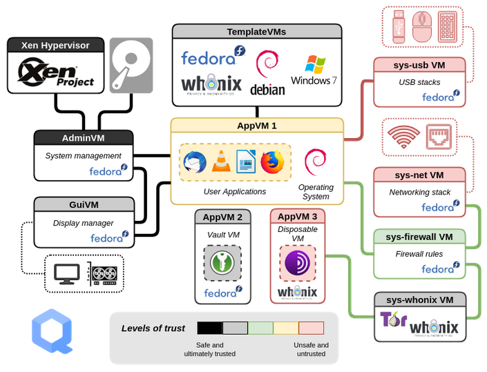

KVMDocumentationVirtualBoxPrevious page: KVMIndex page: DocumentationNext page: VirtualBoxQubes-Whonix™ Overview


Qubes-Whonix is the seamless combination of Qubes OS and Whonix for advanced security and anonymity.
Overview
In this configuration Whonix runs on top of Qubes inside virtual machines (VMs), just like any other OS on the same platform (Fedora, Debian, Arch Linux and so on).
The Qubes bare-metal hypervisor is based on Xen and Fedora. Via hardware support like VT-x and VT-d Qubes has successfully implemented a comprehensive yet strict security-by-isolation architecture. Hardware controllers and multiple user domains (qubes) are isolated using separate VMs that are explicitly assigned different levels of trust, yet the desktop experience is user-friendly and well-integrated.
Whonix is based on Debian and Tor. The design provides a two-VM,
split security architecture: an isolated Whonix-Gateway™ (ProxyVM;
sys-whonix) for complete routing of traffic over Tor; and
Whonix-Workstation™ (App Qube;
anon-whonix) for all desktop applications, which serves as
a tailored OS environment for Tor-based privacy/anonymity.
To use Qubes-Whonix, Qubes must
first be installed as a hypervisor on the physical host computer,
followed by installation of the two separate Whonix Templates --
whonix-gateway-18 and whonix-workstation-18 --
on top of Qubes. From this point, the Whonix Templates can be used for
customization and creation of multiple Whonix-Gateway ProxyVMs and
Whonix-Workstation AppVMs, enabling enhanced compartmentalization of
user activities for better privacy. [1]
For a more in-depth consideration of Qubes-Whonix advantages, see: Why use Qubes over other Virtualizers?
Qubes-Whonix Security Disadvantages - Help Wanted!
Figure: Qubes OS Design [2]

Guides
Common Tasks
For major Template and AppVM operations, refer to the following guides:
- Install Qubes-Whonix
- Update Qubes-Whonix
- Update Tor Browser
- Reinstall Qubes-Whonix Templates
- Uninstall Qubes-Whonix Templates
- Install and update software in dom0
- Backup,
restore and migrate VMs
- Qubes
backups do not yet include
qvm-tagswhich will result inDenied: whonix.NewStatusdom0 notifications
- Qubes
backups do not yet include
Security and Anonymity
For improved security and anonymity after installing Qubes-Whonix, refer to the following guides:
- Post-installation security advice
- How to use Tor Bridges
- Multiple Whonix-Workstation
- Disposables
 [Broken-ExtLink--no-url-was-provided]
[Broken-ExtLink--no-url-was-provided]
- (Qubes-Whonix is based on Kicksecure)
Advanced
Qubes Persistence
 [Broken-ExtLink--no-url-was-provided]
[Broken-ExtLink--no-url-was-provided]
Qubes Template Modifications
 [Broken-ExtLink--no-url-was-provided]
[Broken-ExtLink--no-url-was-provided]
Support
Before seeking personal support, please first search for the issue and a possible, documented solution. In many cases the issue can be solved by inspecting the phabricator issues tracker, reading Whonix guides/documentation, conducting web searches, and examining past support requests.
If a search yields no results, support requests should be directed to the most appropriate forum:
- Qubes:
- Qubes-Whonix-specific: Whonix Qubes Forum
- Whonix, Debian and Tor: Whonix Support
Footnotes
- The only limitation on the number of possible VMs is available disk space.
- https://www.qubes-os.org/intro/
- The former discourse forum was discontinued on 1 July, 2021.